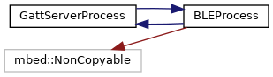
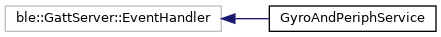
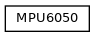

|
Gyro and Peripheral NRF52-DK Demo
1.0.3
The device will start and make advertising every 5 seconds and user could find the device by NRF connect. As user connect he/she should see a custom service with a few characteristics: gyro AX, AY, AZ and peripheral control. Select the peripheral control and send the command (0x01, 0x02, 0x03) to turn led on. After this, user could read the last gyro values (just update these values, when we have moves - interrupts from the sensor) from the gyro characteristick.
|
|  |
|  |
|  |